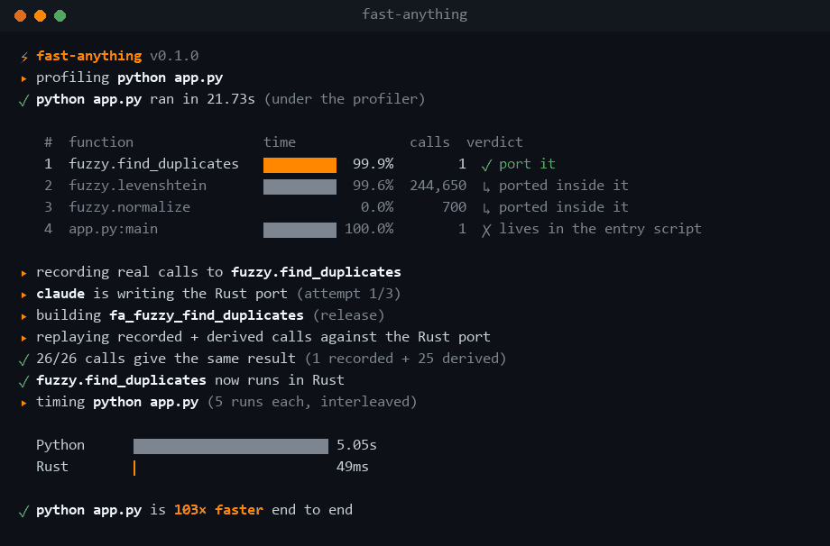
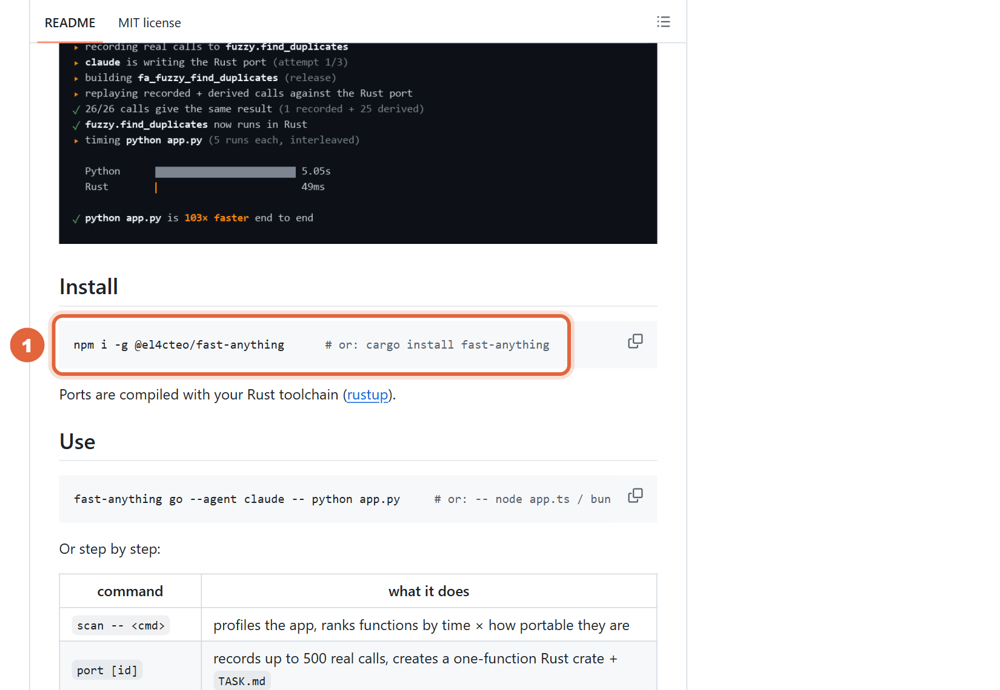
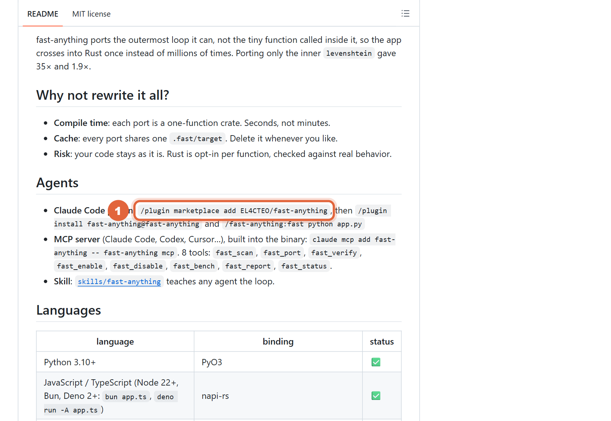
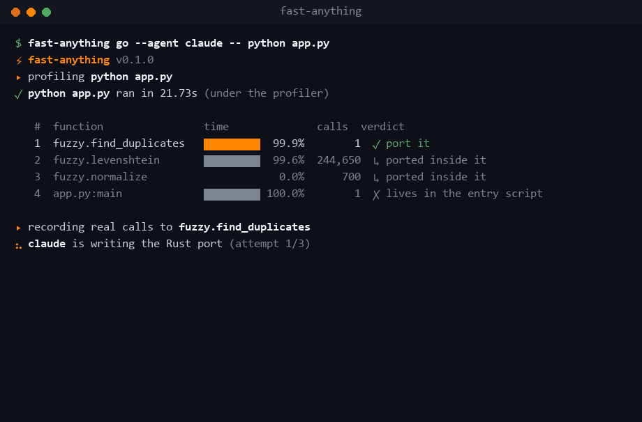
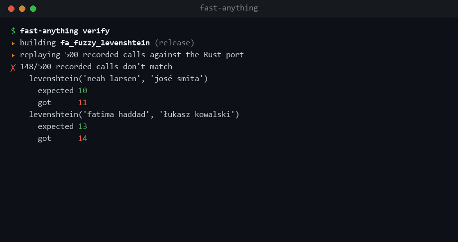
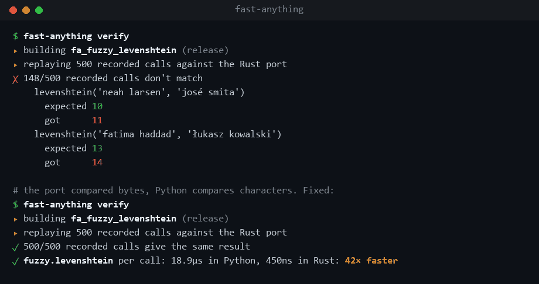
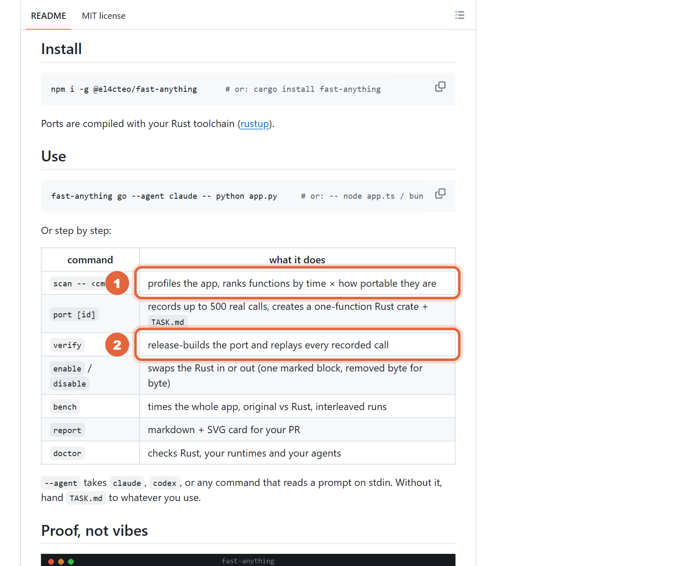

공식 설치 문서 기준이에요. 프로그램을 돌려서 시간을 제일 많이 먹는 함수를 찾고, 그 함수 하나만 클로드 코드(또는 코덱스)가 러스트(Rust)로 옮겨요. 실제로 돌았던 기록 최대 500개를 다시 넣어 원래랑 같은 답이 나오는지 확인하고, 다 맞을 때만 갈아 끼워요. 마음에 안 들면 한 줄로 원래대로. 무료 오픈소스(MIT)예요.

터미널에서 npm i -g @el4cteo/fast-anything (1). cargo가 있으면 cargo install fast-anything 도 돼요. 그다음 fast-anything doctor 로 러스트·언어 실행기·코딩 AI가 다 잡히는지 확인해요.

클로드 코드 안에서 /plugin marketplace add EL4CTEO/fast-anything (1) → /plugin install fast-anything@fast-anything. MCP로 붙이려면 터미널에서 claude mcp add fast-anything -- fast-anything mcp.

클로드 코드에서 /fast-anything:fast python app.py — 또는 터미널에서 fast-anything go --agent claude -- python app.py. 'python app.py' 자리에 평소 프로그램을 실행하는 명령(node app.ts, ruby app.rb 등)을 그대로 넣어요.
먼저 프로그램을 한 번 돌리며 함수마다 시간을 재요. 표의 time 막대가 긴 줄이 범인이고, verdict가 'port it'이면 옮길 수 있는 함수예요. 못 옮기는 함수는 이유가 같이 나와요(예: 시작 파일 안에 있음).

옮긴 코드에 기록해 둔 실제 호출(최대 500개)과 가장자리 값(빈 값·영어 아닌 글자·아주 큰 입력 등)을 넣어 원래 코드와 답을 비교해요. 하나라도 다르면 켜지 않아요. 공식 예시에선 글자 대신 바이트를 비교한 코드가 500개 중 148개에서 걸렸고, 고친 뒤 500/500이 맞았어요.


다 맞으면 enable로 그 함수 자리만 러스트로 바뀌어요(표시된 한 덩어리). bench는 원래와 러스트를 번갈아 돌려 전체 시간을 재요. 되돌리기는 fast-anything disable(넣은 덩어리를 바이트 그대로 걷어냄), 잠깐 원래로 돌리려면 FAST_ANYTHING_DISABLE=1.

터미널에서(러스트 툴체인 먼저)
npm i -g @el4cteo/fast-anything
설치 뒤 한 번
fast-anything doctor
클로드 코드 안에서, 두 줄
/plugin marketplace add EL4CTEO/fast-anything /plugin install fast-anything@fast-anything
느린 프로그램 폴더에서
/fast-anything:fast python app.py
클로드 대신 코덱스면 --agent codex
fast-anything go --agent claude -- python app.py
마음에 안 들 때
fast-anything disable
설치·문서
https://github.com/EL4CTEO/fast-anything
도움이 되셨다면
@ai.antenna.kr
에서 바로 쓰는 AI 활용법을 계속 올립니다.